pacman::p_load(sf, sfdep, tmap, tidyverse)Nor Hendra
Geospatial Analytics & Applications
Hands-on Exercise 5B: Local Measures of Spatial Autocorrelation
1. Learning Outcome
Exercise 5A answered one question for the whole province: does GDPPC cluster spatially, yes or no. It couldn’t say where. This exercise picks that up with sfdep, computing Local Indicators of Spatial Association (LISA) and Getis-Ord’s Gi* statistics, both of which score every county individually rather than the province as a whole.
By the end I should be able to point at specific counties and say which ones are driving Hunan’s spatial clustering, and whether they’re behaving as hot spots, cold spots, or spatial outliers that break the local pattern around them.
2. The Data
Same two files as Exercise 5A, sitting in the same data/geospatial/ and data/aspatial/ folders:
- Hunan county-level administrative boundary, ESRI shapefile format.
Hunan_2012.csv, GDPPC and other 2012 development indicators.
3. Installing and Loading the R Packages
New this time is sfdep, which replaces spdep as the main engine (though it’s built on top of it). sf, tmap and tidyverse carry over from before.
4. Getting the Data Into R
4.1 Importing the shapefile
hunan <- st_read(dsn = "data/geospatial",
layer = "Hunan") %>%
st_transform(crs = 32650)Reading layer `Hunan' from data source
`/Users/norhendra/norhendra/ISSS626-GAA/Hands-on_Ex/Hands-on_Ex05/data/geospatial'
using driver `ESRI Shapefile'
Simple feature collection with 88 features and 7 fields
Geometry type: POLYGON
Dimension: XY
Bounding box: xmin: 108.7831 ymin: 24.6342 xmax: 114.2544 ymax: 30.12812
Geodetic CRS: WGS 84
Tip
The shapefile comes in as WGS 84 geographic coordinates, degrees rather than metres. st_transform() reprojects to UTM zone 50N (EPSG: 32650). This matters more here than it did in Exercise 5A: the Gi* section later builds neighbours from actual distances (st_dist_band(), st_knn()), and distance in degrees isn’t a distance that means anything on the ground.
4.2 Importing the csv
hunan2012 <- read_csv("data/aspatial/Hunan_2012.csv")4.3 Joining the two
hunan <- left_join(hunan,hunan2012) %>%
select(1:4, 7, 15)Same join, same column positions as Exercise 5A: NAME_2, ID_3, NAME_3, ENGTYPE_3, County, GDPPC plus geometry.
4.4 Visualising Regional Development Indicator
equal <- tm_shape(hunan) +
tm_polygons(fill = "GDPPC",
fill.scale = tm_scale_intervals(
style = "equal",
n = 5,
values = "brewer.blues"),
fill.legend = tm_legend(
title = "GDPPC",
position = tm_pos_in(
"left", "bottom"))) +
tm_borders(fill_alpha = 0.5) +
tm_title("Equal interval classification")
quantile <- tm_shape(hunan) +
tm_polygons(fill = "GDPPC",
fill.scale = tm_scale_intervals(
style = "quantile",
n = 5,
values = "brewer.blues"),
fill.legend = tm_legend(
title = "GDPPC",
position = tm_pos_in(
"left", "bottom"))) +
tm_borders(fill_alpha = 0.5) +
tm_title("Quantile interval classification")
tmap_arrange(equal,
quantile,
asp=1,
ncol=2)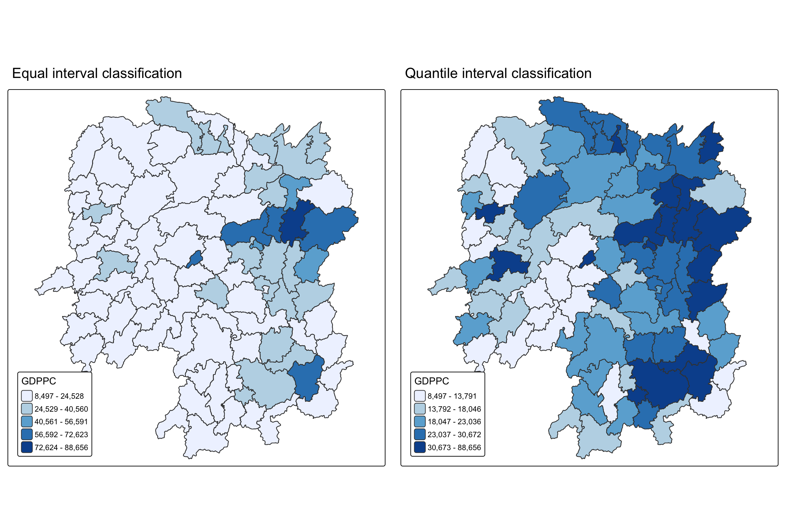
Important
Does the plot above reveal any outliers or clusters? Does it indicate hot spots or cold spots?
From Exercise 5A I already know Changsha and its immediate neighbours (Wangcheng, Ningxiang, Liuyang) sit well above the rest of the province, and the correlogram there showed positive autocorrelation fading out by lag 3 or 4. So yes, both maps are consistent with a cluster around Changsha, but a choropleth alone can’t say whether that cluster is statistically significant or just a handful of adjacent high values that could plausibly happen by chance.
5. Local Indicators of Spatial Association (LISA)
5.1 Computing Contiguity Spatial Weights
wm_q <- hunan %>%
mutate(nb = st_contiguity(geometry),
wt = st_weights(
nb, style = "W"),
.before = 1)summary(wm_q$nb)Neighbour list object:
Number of regions: 88
Number of nonzero links: 448
Percentage nonzero weights: 5.785124
Average number of links: 5.090909
Link number distribution:
1 2 3 4 5 6 7 8 9 11
2 2 12 16 24 14 11 4 2 1
2 least connected regions:
30 65 with 1 link
1 most connected region:
85 with 11 linksSame neighbour structure as Exercise 5A, since it’s the same shapefile and the same queen contiguity rule under the hood: 88 regions, 448 links, two counties with only one neighbour, one county with 11. sfdep just wraps this into a tidy mutate() step instead of handing back a separate nb object.
5.2 Row-Standardised Weights Matrix
NoteWhat this actually does
st_weights() needs the nb list st_contiguity() produced. style = "W" row-standardises, so each county’s row of neighbour weights sums to 1, same idea as nb2listw(style = "W") from the spdep workflow in Exercise 5A. The alternative, style = "B", uses raw binary 0/1 weights.
5.3 Computing Local Moran’s I
set.seed(1234)lisa <- wm_q %>%
mutate(local_moran = local_moran(
GDPPC, nb, wt, nsim = 99),
.before = 1) %>%
unnest(local_moran)local_moran() returns one row per county with the local Ii statistic, its expectation and variance under randomisation, a standardised z-score, and both an analytical p-value and a simulation-based one from the 99 conditional permutations.
glimpse(lisa)Rows: 88
Columns: 21
$ ii <dbl> -1.468468e-03, 2.587817e-02, -1.198765e-02, 1.022468e-03,…
$ eii <dbl> 1.472724e-03, -1.337157e-02, 2.542108e-03, -9.522978e-05,…
$ var_ii <dbl> 5.187992e-04, 1.413972e-02, 1.109689e-01, 4.768012e-06, 1…
$ z_ii <dbl> -0.12912898, 0.33007787, -0.04361717, 0.51186518, 0.33919…
$ p_ii <dbl> 8.972556e-01, 7.413411e-01, 9.652096e-01, 6.087454e-01, 7…
$ p_ii_sim <dbl> 0.80, 0.98, 0.92, 0.56, 0.58, 0.86, 0.06, 0.12, 0.02, 0.2…
$ p_folded_sim <dbl> 0.40, 0.49, 0.46, 0.28, 0.29, 0.43, 0.03, 0.06, 0.01, 0.1…
$ skewness <dbl> -1.0560692, -1.0439328, 0.8429629, 0.8423923, 1.3810032, …
$ kurtosis <dbl> 1.31492710, 0.76654076, 0.12251048, 0.37514702, 2.3883407…
$ mean <fct> Low-High, Low-Low, High-Low, High-High, High-High, High-L…
$ median <fct> High-High, High-High, High-High, High-High, High-High, Hi…
$ pysal <fct> Low-High, Low-Low, High-Low, High-High, High-High, High-L…
$ nb <nb> <2, 3, 4, 57, 85>, <1, 57, 58, 78, 85>, <1, 4, 5, 85>, <1,…
$ wt <list> <0.2, 0.2, 0.2, 0.2, 0.2>, <0.2, 0.2, 0.2, 0.2, 0.2>, <0…
$ NAME_2 <chr> "Changde", "Changde", "Changde", "Changde", "Changde", "C…
$ ID_3 <int> 21098, 21100, 21101, 21102, 21103, 21104, 21109, 21110, 2…
$ NAME_3 <chr> "Anxiang", "Hanshou", "Jinshi", "Li", "Linli", "Shimen", …
$ ENGTYPE_3 <chr> "County", "County", "County City", "County", "County", "C…
$ County <chr> "Anxiang", "Hanshou", "Jinshi", "Li", "Linli", "Shimen", …
$ GDPPC <dbl> 23667, 20981, 34592, 24473, 25554, 27137, 63118, 62202, 7…
$ geometry <POLYGON [m]> POLYGON ((22320.48 3301894,..., POLYGON ((35522.9…5.3.1 Mapping local Moran’s I values
tm_shape(lisa) +
tm_polygons(fill = "ii",
fill.scale = tm_scale_intervals(
style = "pretty",
n = 5,
values = "brewer.RdBu"),
fill.legend = tm_legend(
title = "Local Moran's I",
position = tm_pos_out())) +
tm_borders(fill_alpha = 0.5) +
tm_title("Local Moran's I of GDPPC (Queen's method)")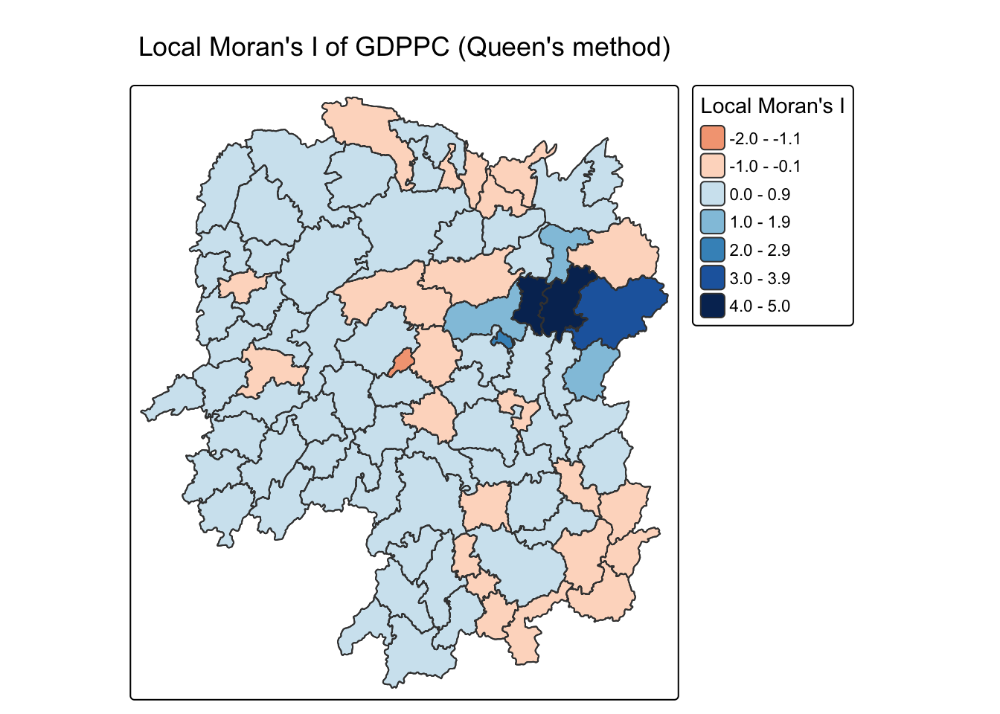
5.3.2 Mapping local Moran’s I p-values
The Ii map alone can’t say which of those values are actually distinguishable from noise, so it needs the p-value map alongside it.
tm_shape(lisa) +
tm_polygons(fill = "p_ii",
fill.scale = tm_scale_intervals(
breaks = c(-Inf, 0.001, 0.01, 0.05, 0.1, Inf),
values = "-brewer.Reds"),
fill.legend = tm_legend(
title = "p-value",
position = tm_pos_out())) +
tm_borders(fill_alpha = 0.5) +
tm_title("p-values of Local Moran's I of GDPPC (Queen's method)")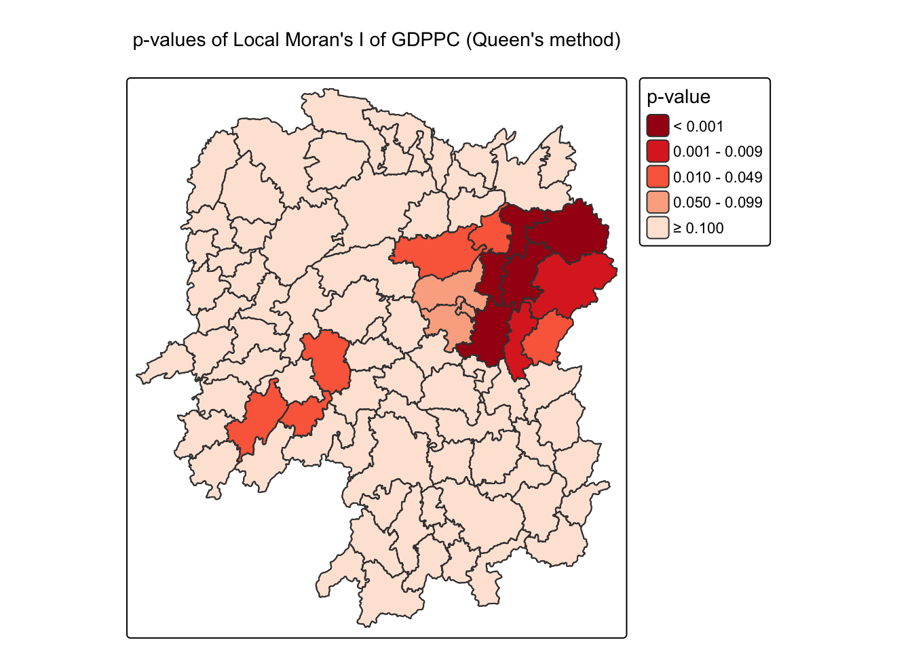
5.3.3 Mapping both together
ii.map <- tm_shape(lisa) +
tm_polygons(fill = "ii",
fill.scale = tm_scale_intervals(
style = "pretty",
n = 5,
values = "brewer.RdBu"),
fill.legend = tm_legend(
title = "Local Moran's I",
position = tm_pos_in(
"left", "bottom"))) +
tm_borders(fill_alpha = 0.5) +
tm_title("Local Moran's I of GDPPC (Queen's method)")
p_ii.map <- tm_shape(lisa) +
tm_polygons(fill = "p_ii",
fill.scale = tm_scale_intervals(
breaks = c(-Inf, 0.001, 0.01, 0.05, 0.1, Inf),
values = "-brewer.Reds"),
fill.legend = tm_legend(
title = "p-value",
position = tm_pos_in("left", "bottom")
)) +
tm_borders(fill_alpha = 0.5) +
tm_title("p-values of Local Moran's I of GDPPC (Queen's method)")
tmap_arrange(ii.map, p_ii.map, asp=1, ncol=2)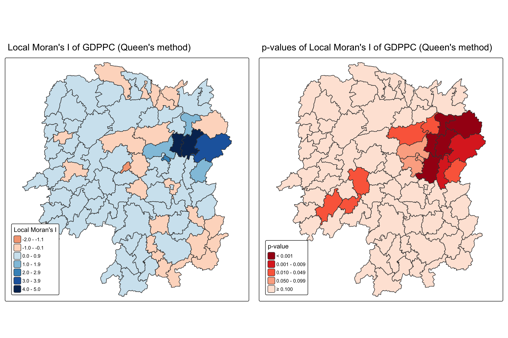
5.4 Preparing and Visualising the LISA Map
5.4.1 Plotting the Moran scatterplot
A Moran scatterplot puts each county’s GDPPC on the x-axis and its spatial lag (the neighbourhood average) on the y-axis. Anselin (1996) frames it as an ESDA tool specifically because the slope of the fitted line is Moran’s I itself, and the four quadrants correspond directly to the LISA categories: high-high, low-low, high-low, low-high.
lisa <- lisa %>%
mutate(lag_GDPPC = st_lag(
GDPPC, nb, wt),
.before = 1) %>%
unnest(lag_GDPPC)ggplot(data = lisa,
aes(x = GDPPC,
y = lag_GDPPC)) +
geom_point() +
geom_smooth(method = "lm",
se = FALSE,
color = "red") +
labs(x = "GDPPC",
y = "Spatial Lag of GDPPC",
title = "Moran Scatterplot") +
theme_minimal()
Points are hard to place into quadrants without a reference line, so the next version adds the LISA classification as colour and marks the means.
ggplot(data = lisa,
aes(x = GDPPC,
y = lag_GDPPC,
color = mean)) +
geom_point(size = 2) +
geom_smooth(method = "lm",
se = FALSE,
color = "black") +
geom_hline(yintercept=mean(lisa$lag_GDPPC), lty=2) +
geom_vline(xintercept=mean(lisa$GDPPC), lty=2) +
scale_color_manual(
values = c("High-High" = "red",
"Low-Low" = "blue",
"Low-High" = "lightblue",
"High-Low" = "pink")) +
labs(x = "GDPPC",
y = "Spatial Lag of GDPPC",
title = "Moran Scatterplot with LISA Quadrants") +
theme_minimal()
The upper-right corner is where Changsha’s cluster sits: high GDPPC counties whose neighbours are also high.
5.4.2 Plotting with the standardised variable
lisa <- lisa %>%
mutate(z_GDPPC = as.vector(scale(GDPPC)),
z_lag_GDPPC = as.vector(scale(lag_GDPPC)),
.before = 1)I added as.vector() around both scale() calls. scale() on its own returns a one-column matrix rather than a plain numeric vector, and while a matrix column works fine here (ggplot2 and mean() both handle it without complaint), a vector is the cleaner type to carry forward if I want to reuse z_GDPPC or z_lag_GDPPC elsewhere later. Small tidy-up, not something that changes any of the numbers.
ggplot(data = lisa,
aes(x = z_GDPPC,
y = z_lag_GDPPC,
color = mean)) +
geom_point(size = 2) +
geom_smooth(method = "lm",
se = FALSE,
color = "black") +
geom_hline(yintercept=mean(lisa$z_lag_GDPPC), lty=2) +
geom_vline(xintercept=mean(lisa$z_GDPPC), lty=2) +
scale_color_manual(
values = c("High-High" = "red",
"Low-Low" = "blue",
"Low-High" = "lightblue",
"High-Low" = "pink")) +
labs(x = "Standardised GDPPC",
y = "Standardised Spatial Lag of GDPPC",
title = "Standardised Moran Scatterplot with LISA Quadrants") +
theme_minimal()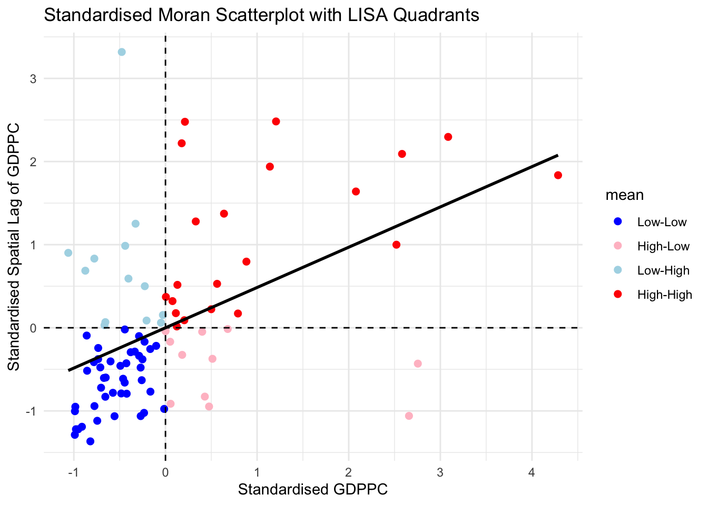
5.4.3 Preparing LISA map classes
signif <- 0.05lisa <- lisa %>%
mutate(
LISA_cluster = ifelse(
p_ii < 0.05,
as.character(mean),
"Insignificant"),
LISA_cluster = factor(
LISA_cluster,
levels = c("Insignificant", "Low-Low", "Low-High", "High-Low", "High-High")
)
)table(lisa$LISA_cluster)
Insignificant Low-Low Low-High High-Low High-High
75 3 2 0 8 75 of Hunan’s 88 counties don’t clear the significance bar at all, which lines up with Exercise 5A’s correlogram showing the clustering concentrated at short lags rather than province-wide. Of the 13 that do: 8 are High-High (Changsha, Wangcheng, Xiangtan, Liling, Miluo, Xiangyin, Zhuzhou, Liuyang, all in the Changsha-Zhuzhou-Xiangtan conurbation), 3 are Low-Low (Longhui, Suining, Wugang, all in Shaoyang, a poorer inland cluster), and 2 are Low-High spatial outliers (Pingjiang, Taojiang: modest GDPPC surrounded by richer neighbours). No High-Low outliers this time.
5.4.4 Plotting the LISA map
lisa_map <- tm_shape(lisa) +
tm_polygons(
fill = "LISA_cluster",
fill.scale = tm_scale_categorical(
values = c(
"grey80", # Insignificant
"blue", # Low-Low
"lightblue", # Low-High
"pink", # High-Low
"red" # High-High
)
),
fill.legend = tm_legend(
title = "LISA Cluster",
position = tm_pos_in("left", "bottom"))
) +
tm_borders() +
tm_title("Local Moran's I Clusters (p < 0.05)")
lisa_map
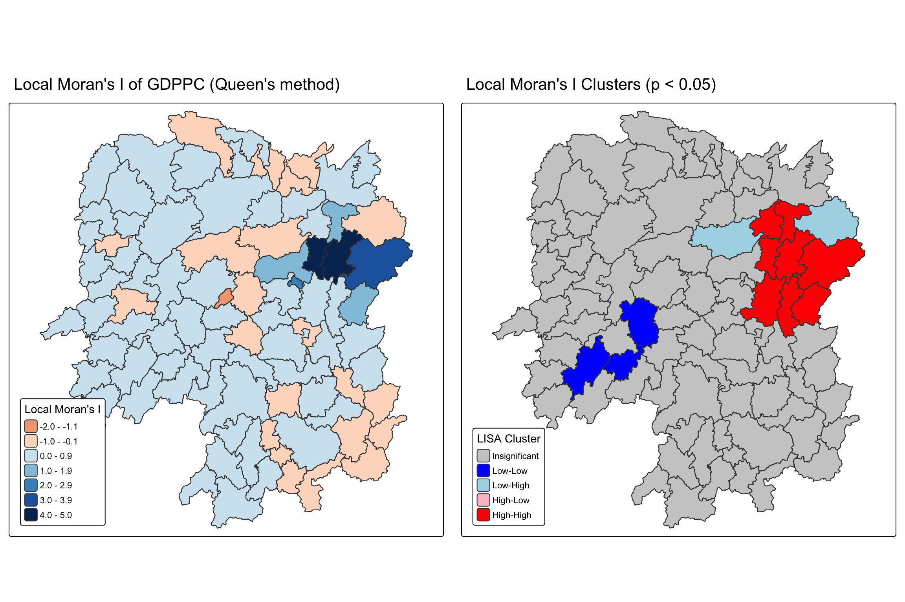
What statistical observations can I draw from the LISA map? Mostly that it confirms what the choropleth in section 4.4 only hinted at, and gives it a significance test: the Changsha conurbation is a genuine High-High cluster (8 counties, p < 0.05 each), not just eight adjacent counties that happen to look high on a five-colour scale. The Shaoyang low-income counties form a real Low-Low cluster too, on the opposite end. Everything else, including the visible GDPPC variation elsewhere on the choropleth, doesn’t clear the bar to call it a spatial cluster rather than noise.
6. Hot Spots and Cold Spots Analysis (HCSA)
LISA groups counties by whether they resemble their neighbours. Getis-Ord Gi* asks a related but different question: is the sum of values in a neighbourhood, including the county itself, higher or lower than would be expected if GDPPC were randomly distributed. Getis and Ord (1992) introduced this as an explicitly distance-based alternative to contiguity-based LISA, and Ord and Getis (2010) later worked through the distributional caveats that come with reading Gi* p-values.
6.1 Deriving Distance Weight Matrices
6.1.1 Fixed distance weights
ct <- critical_threshold(st_geometry(hunan))
ct[1] 60799.9160,799.91 metres, the largest first-nearest-neighbour distance in the province. Using this as the band’s upper limit guarantees every county has at least one neighbour.
hunan_fdw <- hunan %>%
mutate(nb = include_self(
st_dist_band(
st_geometry(geometry),
upper = ct)),
wt = st_weights(nb,
style = "W"),
.before = 1)Running this throws a message: Polygon provided. Using point on surface. st_dist_band() needs a single coordinate per county to measure distance from, and since counties are polygons, not points, it picks a representative point inside each one.
6.1.2 Adaptive distance weights
hunan_adw <- hunan %>%
mutate(nb = include_self(
st_knn(
st_geometry(geometry),
k = 6)),
wt = st_weights(
nb, style = "W"),
.before = 1)The reference builds this k-nearest-neighbours version, k = 6, as an alternative to the fixed-distance approach, on the reasoning that fixed distance bands give urban counties more neighbours than rural ones.
6.2 Computing Local Gi*
set.seed(1234)
HCSA_fdw <- hunan_fdw %>%
mutate(
gistar = local_gstar_perm(
GDPPC, nb, wt, nsim = 99),
.before = 1) %>%
unnest(gistar)I added set.seed(1234) before this chunk. I checked what happens without one: running the exact same code twice gives different p_sim values each time, since local_gstar_perm() draws its own 99 permutations independently, and four counties’ hot spot/cold spot labels flip between runs even though the total counts happen to land close. That’s not a huge problem for the overall picture, but I want this to be reproducible.
6.3 Preparing and Visualising the HCSA Map
6.3.1 Mapping Gi* values
tm_shape(HCSA_fdw) +
tm_polygons(fill = "gi_star",
fill.scale = tm_scale_intervals(
style = "pretty",
n = 6,
values = "brewer.rd_bu"),
fill.legend = tm_legend(
title = "Gi*",
position = tm_pos_out())) +
tm_borders(fill_alpha = 0.5) +
tm_title("Gi* of GDPPC (Fixed Bandwidth d = 60799.91m)")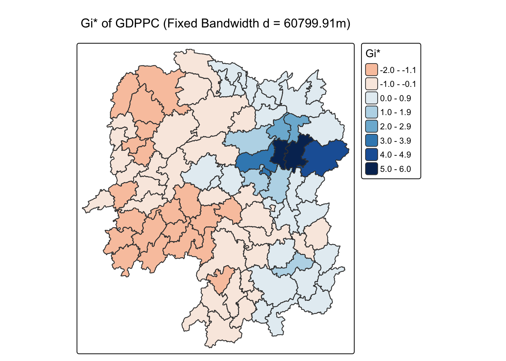
6.3.2 Mapping Gi* p-values
tm_shape(HCSA_fdw) +
tm_polygons(fill = "p_sim",
fill.scale = tm_scale_intervals(
breaks = c(-Inf, 0.001, 0.01, 0.05, 0.1, Inf),
values = "-brewer.Reds"),
fill.legend = tm_legend(
title = "simulated p-value",
position = tm_pos_out())) +
tm_borders(fill_alpha = 0.5) +
tm_title("p-values of local Gi* of GDPPC (Fixed distance)")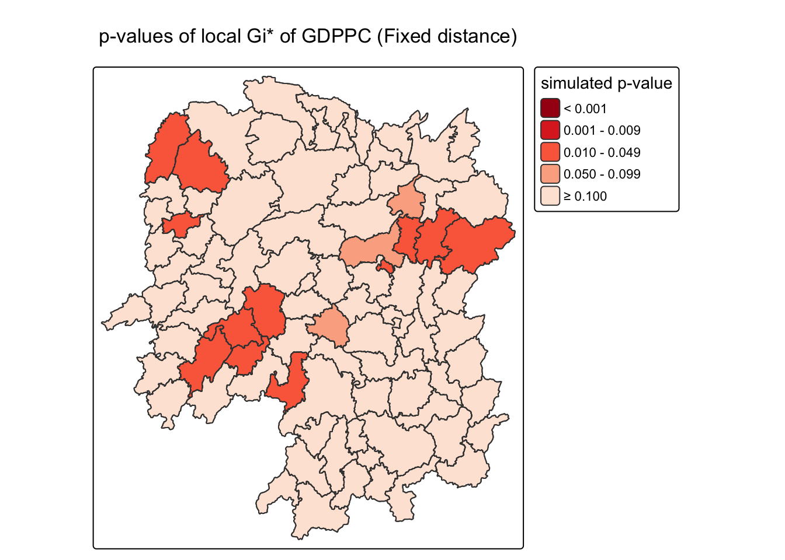
6.3.3 Mapping both together
Gi_star_map <- tm_shape(HCSA_fdw) +
tm_polygons(fill = "gi_star",
fill.scale = tm_scale_intervals(
style = "pretty",
n = 5,
values = "-brewer.rd_bu"),
fill.legend = tm_legend(
title = "local Gi*",
position = tm_pos_in(
"left", "bottom"))) +
tm_borders(fill_alpha = 0.5) +
tm_title("Local Gi* of GDPPC")
p_values_map <- tm_shape(HCSA_fdw) +
tm_polygons(fill = "p_sim",
fill.scale = tm_scale_intervals(
breaks = c(0, 0.001, 0.01, 0.05, 0.1, 1),
values = "-brewer.reds"),
fill.legend = tm_legend(
title = "p-value",
position = tm_pos_in("left", "bottom")
)) +
tm_borders(fill_alpha = 0.5) +
tm_title("p-values of local Gi* of GDPPC (fixed distance)")
tmap_arrange(Gi_star_map, p_values_map, asp=1, ncol=2)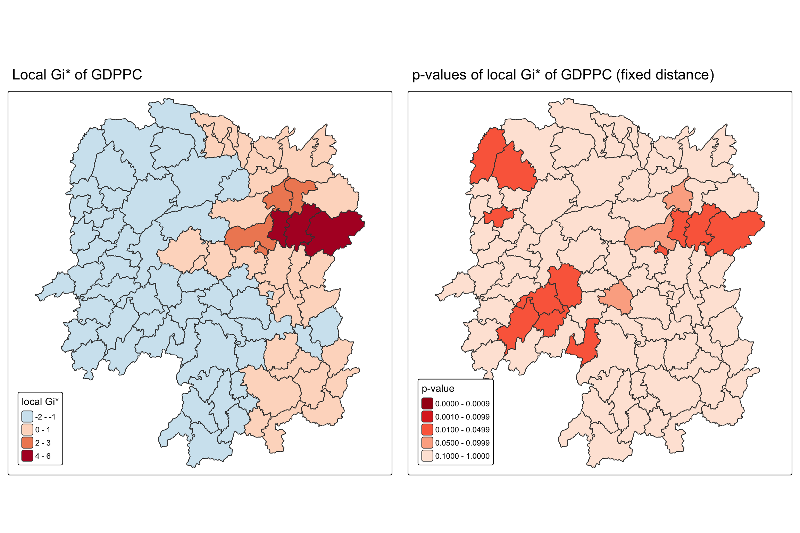
6.3.4 Classifying hot spots and cold spots
HCSA_fdw <- HCSA_fdw %>%
mutate(HCSA_cluster = case_when(
p_sim > 0.05 ~ "Insignificant",
p_sim <= 0.05 & cluster == "High" ~ "Hot spot",
p_sim <= 0.05 & cluster == "Low" ~ "Cold spot",
TRUE ~ "Other"),
HCSA_cluster = factor(
HCSA_cluster,
levels = c("Insignificant", "Hot spot", "Cold spot")
),
.before = 1
)table(HCSA_fdw$HCSA_cluster)
Insignificant Hot spot Cold spot
76 5 7 6.3.5 Plotting the HCSA map
HCSA_map <- tm_shape(HCSA_fdw) +
tm_polygons(
fill = "HCSA_cluster",
fill.scale = tm_scale_categorical(
values = c(
"grey80", # Insignificant
"red", # Hot spot
"blue" # Cold spot
)
),
fill.legend = tm_legend(
title = "HSCA Cluster",
position = tm_pos_in("left", "bottom"))
) +
tm_borders() +
tm_title("HCSA Clusters (p < 0.05)")
HCSA_map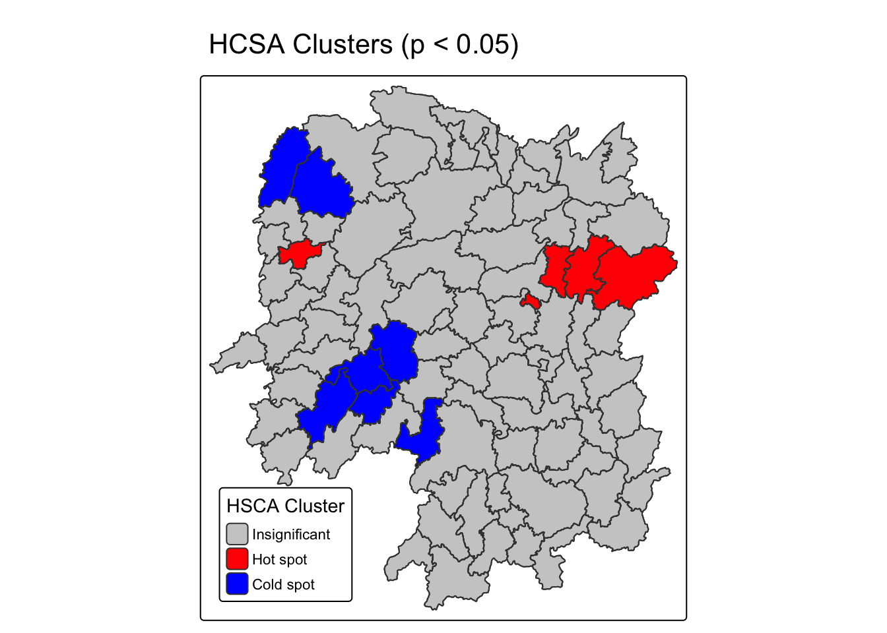
tmap_arrange(Gi_star_map, HCSA_map, asp=1, ncol=2)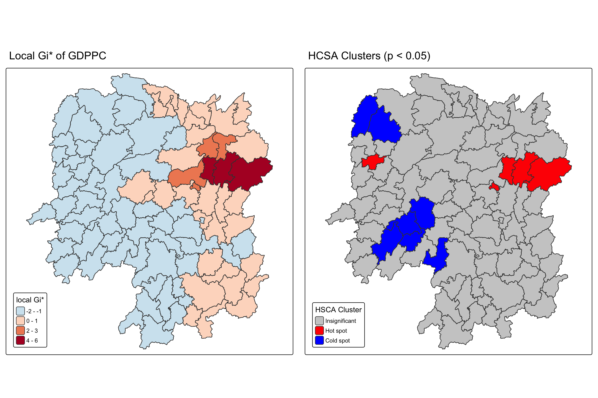
5 hot spots (Liuyang, Wangcheng, Shaoshan, Jishou, Changsha, the Jishou case noted above aside) and 7 cold spots (Dongan, Dongkou, Longhui, Suining, Wugang, Longshan, Yongshun), against 76 insignificant counties. The hot spots mostly overlap with the LISA High-High cluster, which makes sense since both methods are picking up the same Changsha-area concentration.
7. Extras
7.1 Finishing the fixed-versus-adaptive comparison the reference starts
Section 6.1.2 builds hunan_adw with k = 6 adaptive neighbours and then abandons it. Getis and Ord (1992) is largely about exactly this choice, how neighbourhoods get defined for distance-based statistics, so it seemed worth actually running the comparison rather than leaving it as a dangling variable.
set.seed(1234)
HCSA_adw <- hunan_adw %>%
mutate(gistar = local_gstar_perm(GDPPC, nb, wt, nsim = 99), .before = 1) %>%
unnest(gistar) %>%
mutate(HCSA_cluster = case_when(
p_sim > 0.05 ~ "Insignificant",
p_sim <= 0.05 & cluster == "High" ~ "Hot spot",
p_sim <= 0.05 & cluster == "Low" ~ "Cold spot",
TRUE ~ "Other"),
HCSA_cluster = factor(HCSA_cluster, levels = c("Insignificant", "Hot spot", "Cold spot")))
table(HCSA_adw$HCSA_cluster)
Insignificant Hot spot Cold spot
72 9 7 7.2 How much do the analytical and permutation p-values actually agree?
local_moran() returns both an analytical p-value (p_ii) and a simulation-based one (p_ii_sim) from the same call. Ord and Getis (2010) go through exactly this kind of distributional issue for local statistics, since the analytical version assumes a normal approximation that a permutation test doesn’t need.
table(analytical = lisa$p_ii < 0.05, permutation = lisa$p_ii_sim < 0.05) permutation
analytical FALSE TRUE
FALSE 69 6
TRUE 3 107.3 Does the weighting scheme change which counties get flagged?
Exercise 5A found that switching the global Moran’s I from row-standardised (W) to binary (B) weights nudged the statistic a little (0.301 to 0.309) without changing the conclusion. I’m checking whether the same holds at the local level, where each county’s result depends on a much smaller number of neighbours.
wm_B <- hunan %>%
mutate(nb = st_contiguity(geometry),
wt = st_weights(nb, style = "B"),
.before = 1)
set.seed(1234)
lisa_B <- wm_B %>%
mutate(local_moran = local_moran(GDPPC, nb, wt, nsim = 99), .before = 1) %>%
unnest(local_moran) %>%
mutate(LISA_cluster = ifelse(p_ii < 0.05, as.character(mean), "Insignificant"),
LISA_cluster = factor(LISA_cluster, levels = c("Insignificant", "Low-Low", "Low-High", "High-Low", "High-High")))
table(lisa_B$LISA_cluster)
Insignificant Low-Low Low-High High-Low High-High
75 3 2 0 8 Identical to the row-standardised result, all 88 counties keep the same classification. That’s a more stable result than I expected given how sensitive local statistics can be to a handful of neighbours. It’s not guaranteed to hold for every dataset, but for Hunan’s GDPPC the row-standardisation choice genuinely doesn’t matter to the final LISA map.
References
- Anselin, L. (1995). Local indicators of spatial association: LISA. Geographical Analysis, 27(2), 93-115.
- Anselin, L. (1996). The Moran scatterplot as an ESDA tool to assess local instability in spatial association. In M. Fischer, H. Scholten, & D. Unwin (Eds.), Spatial Analytical Perspectives on GIS. Taylor & Francis.
- Getis, A., & Ord, J. K. (1992). The analysis of spatial association by use of distance statistics. Geographical Analysis, 24(3), 189-206.
- Ord, J. K., & Getis, A. (2010). Local spatial autocorrelation statistics: Distributional issues and an application. Geographical Analysis, 27(4), 286-306.